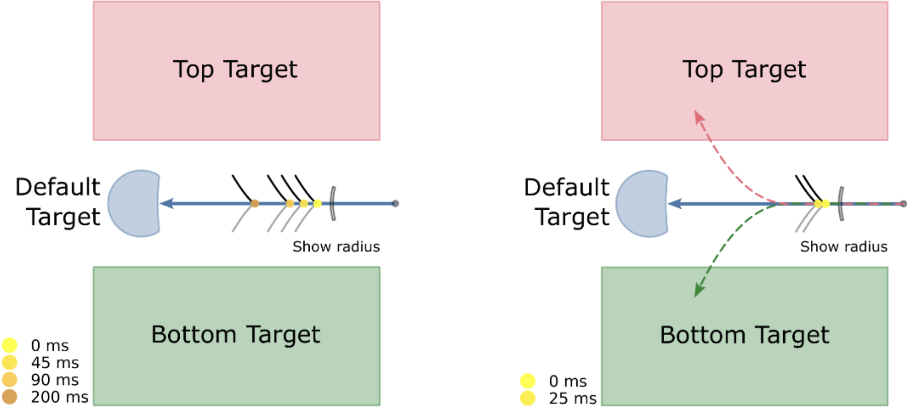

Research
Last updated: January 2025.
I am a PhD student at the Okinawa Institute of Science and Technology, currently undertaking rotations in research units supervised by Jun Tani, Kenji Doya, and Tom Froese. Previously, I did a master's (by research) in neuroscience at Western University in the Sensorimotor Superlab. Before that I was an undergrad at the University of Toronto where I studied electrical engineering with a focus on control systems and robotics.
My primary research interests lie at the confluence of robotics and neuroscience. A fundamental question that drives me is about the computation and representation of actions and their perception, and how we can reliably or at least plausibly bring our understanding and artificial formulation of control closer to reality — to not only enable more robust and easily generalizable robotic control but also gain further and integrative understanding of biological sensorimotor control. Some directions that I am currently exploring include:
Last updated: January 2025.